Nucite
Discarded pistachio shells, recast as surfaces and objects.
- Year
- 2026
- Focus
- Material exploration
- Context
- Studio III · DESG 4005
- Materials / process
- Pistachio shells · Resin casting
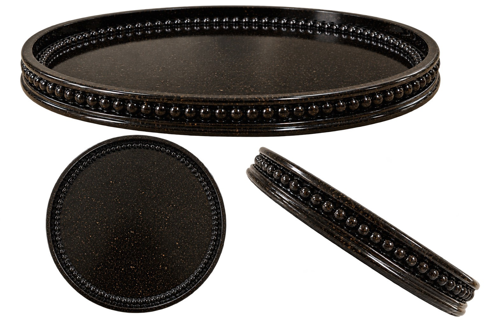
01 / Starting material
A new use for
discarded shells.
Nucite begins with a familiar waste material: pistachio shells left after the nut has been eaten. The project explores how those shells can become the visible aggregate in a cast composite.
I collected, roasted, crushed, and blended the shells, then combined them with a resin binder. Changes in particle size and color became a way to develop the material's appearance, from surfaces that preserve recognizable shells to a finer, darker composite.
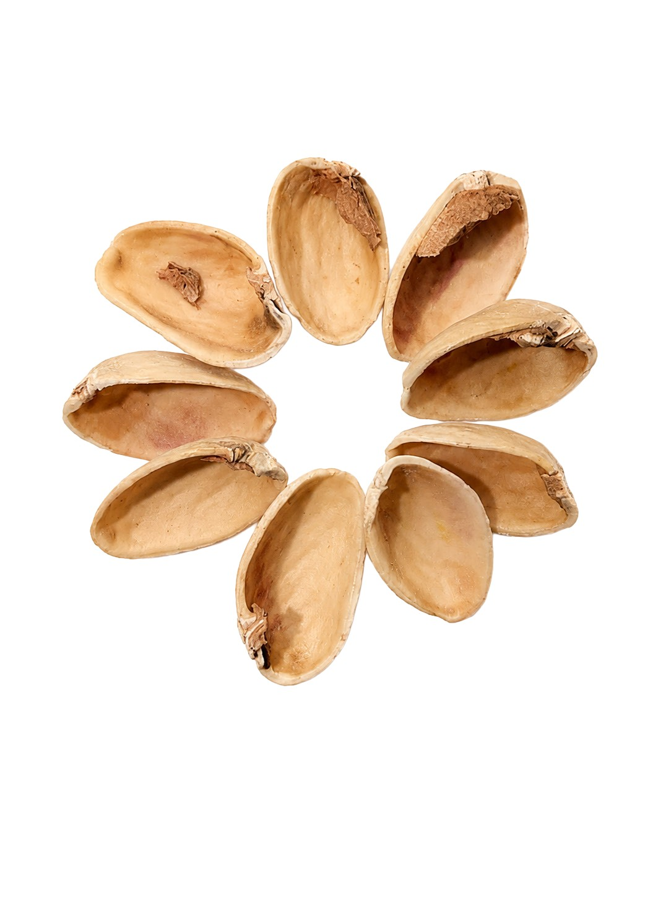
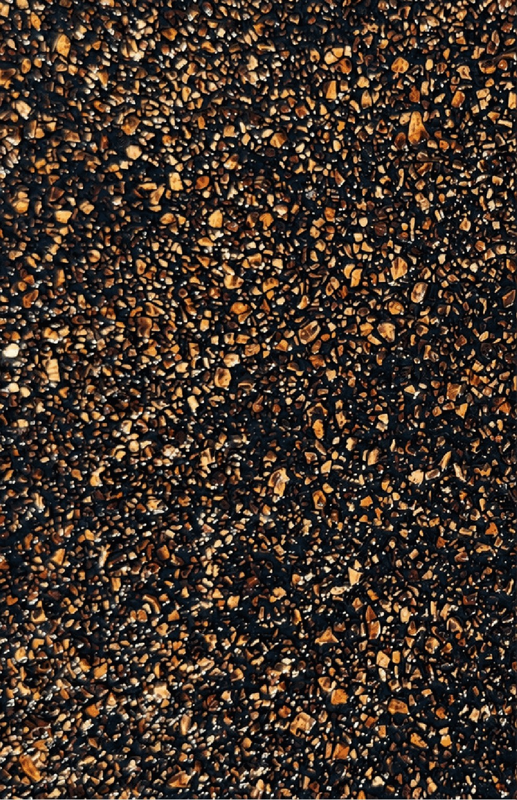
02 / Aggregate studies
One waste stream.
Four surface directions.
Fine, medium, coarse, and mixed aggregate samples tested how much of the original shell remained visible. Whole shells create an open, recognizable texture; smaller fragments produce a denser surface. Each sample records its shell and binder quantities.
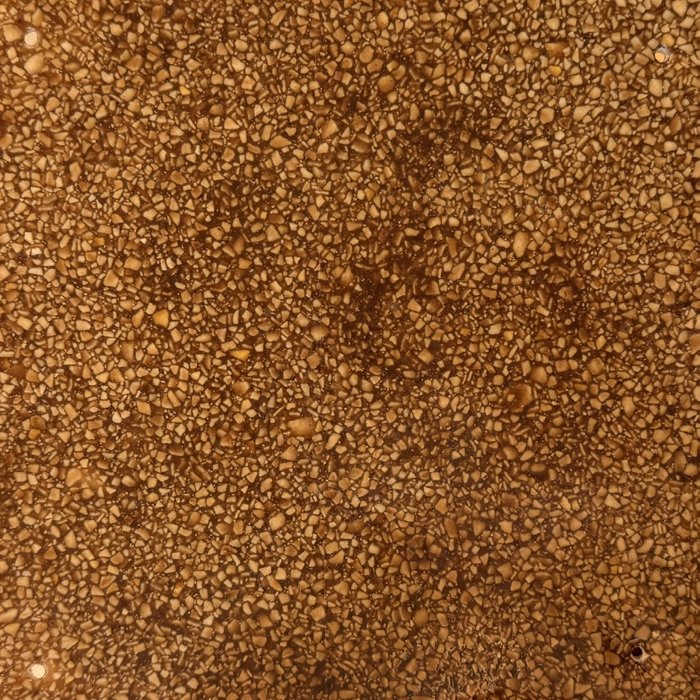
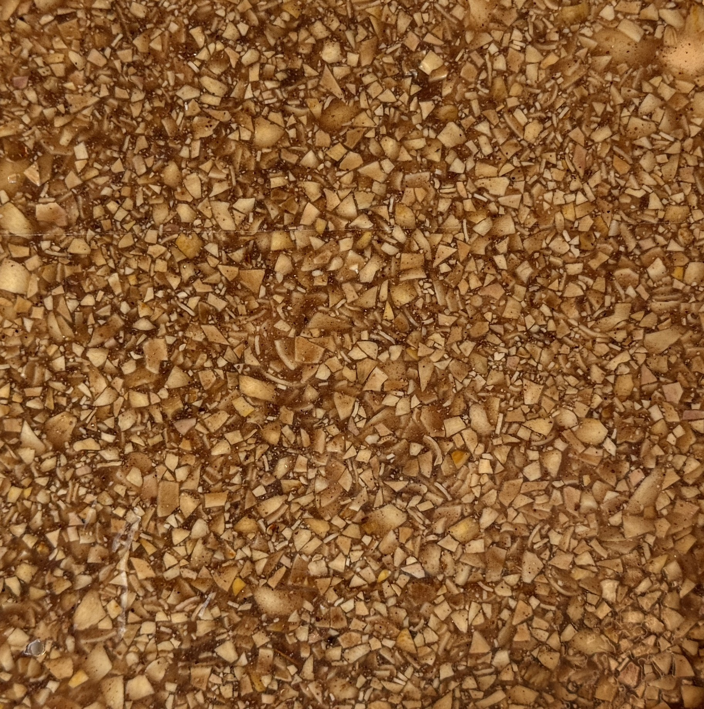
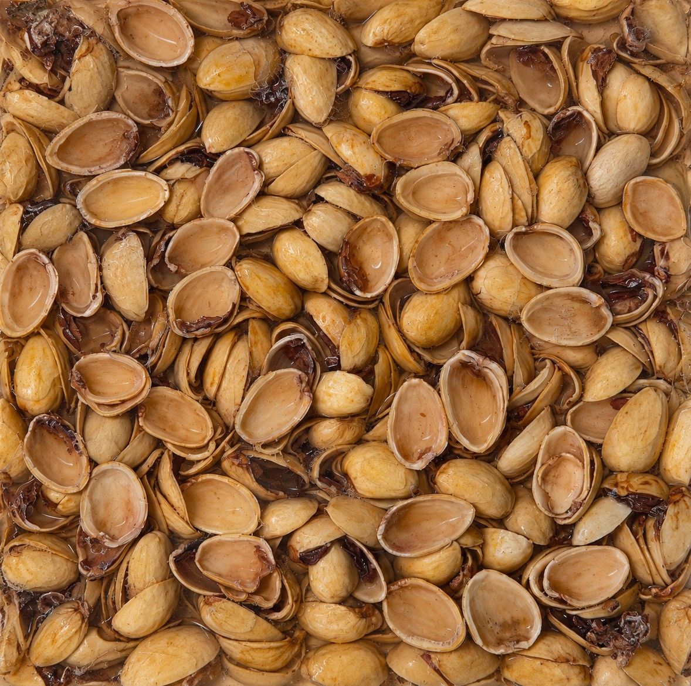
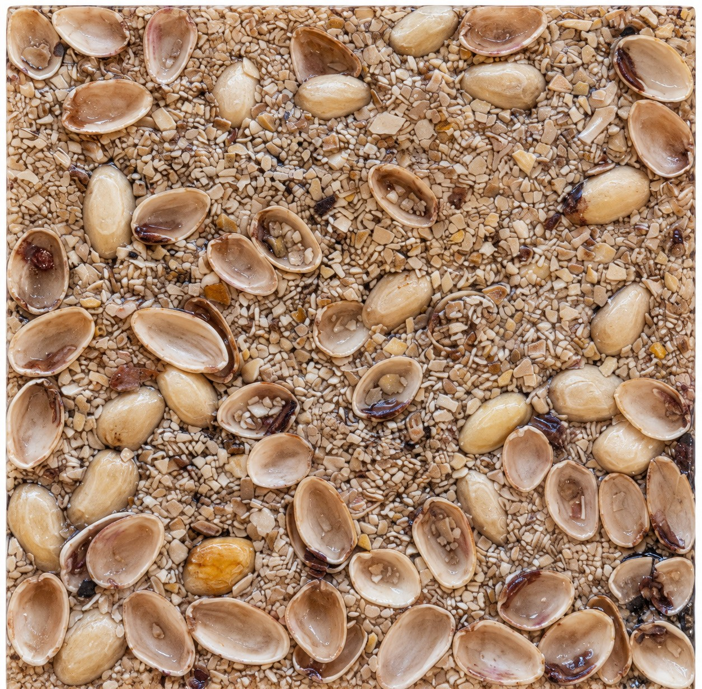
03 / Making
Roast. Blend.
Cast. Refine.
Roasting approximately half of the collected shells introduced a darker tone. I combined roasted and unroasted material, crushed and blended it, then mixed the aggregate with resin before casting it into a mold.
The refined tile uses 90 g of shell mix and 30 g of resin in a 5.5-inch square. Variation in particle size and color became the defining quality of the surface.
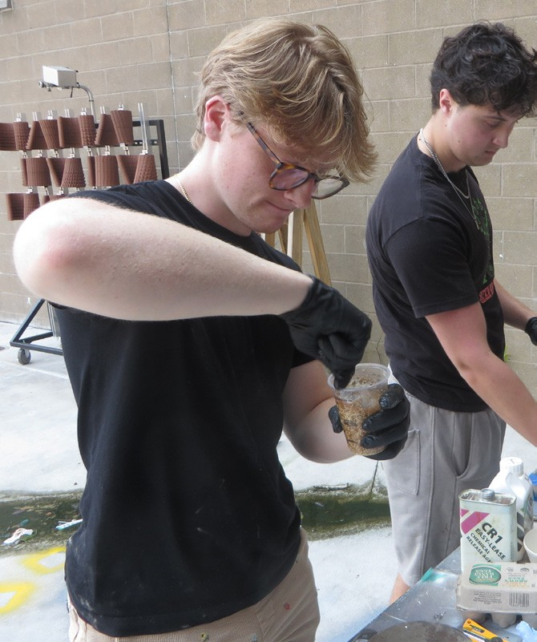
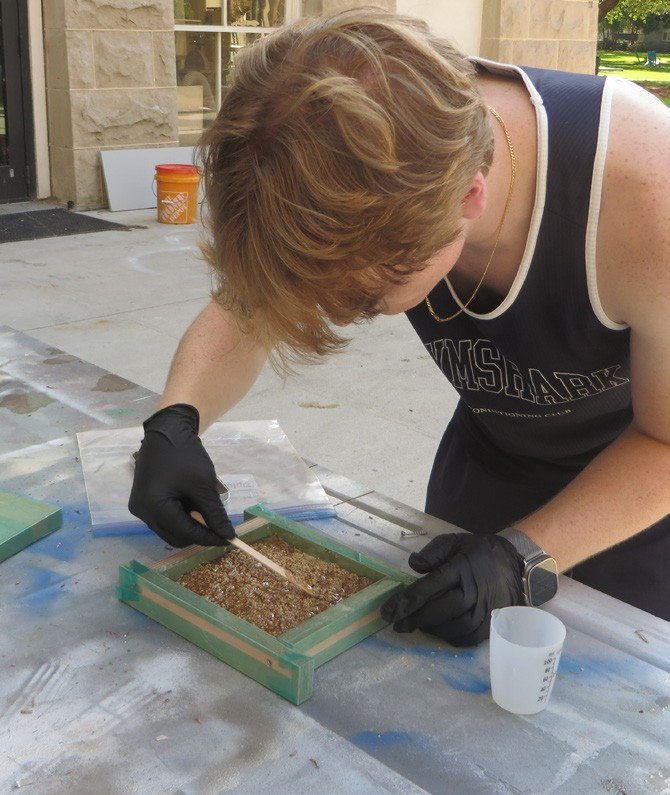
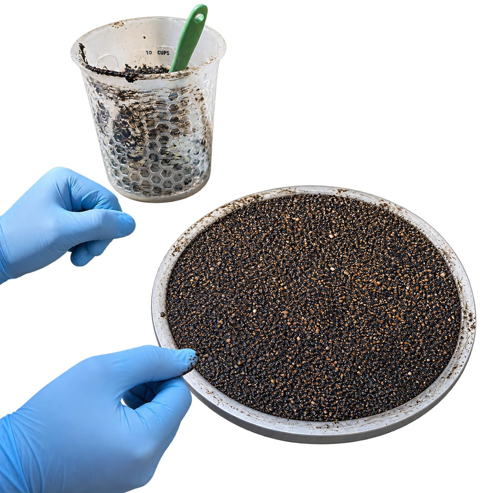
04 / Object studies
Beyond
a flat surface.
A cup and small dish extended the material study into hollow forms. A separate experiment used fine aggregate to cast a copy of a broken lawn-chair component, exploring repair as another possible application.
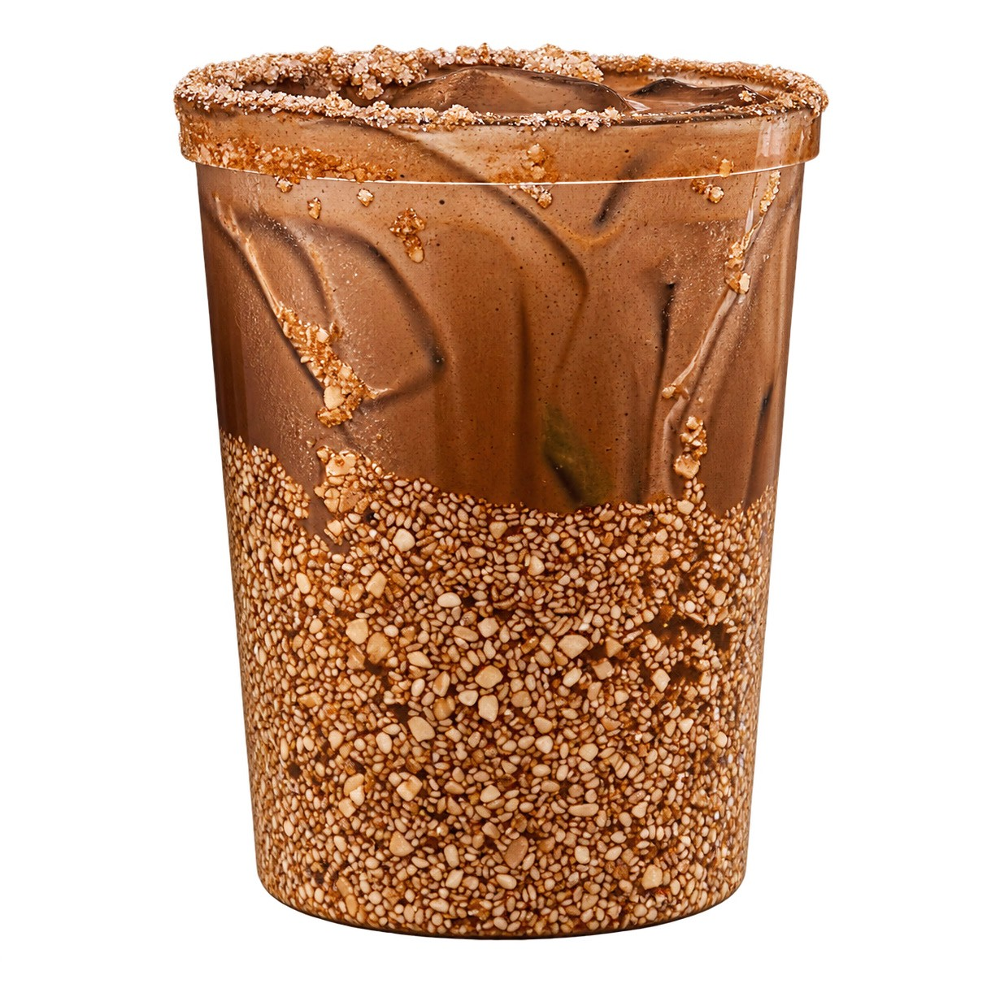
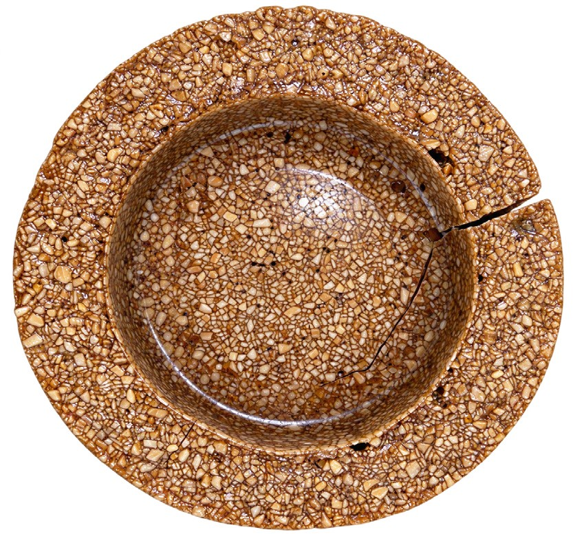
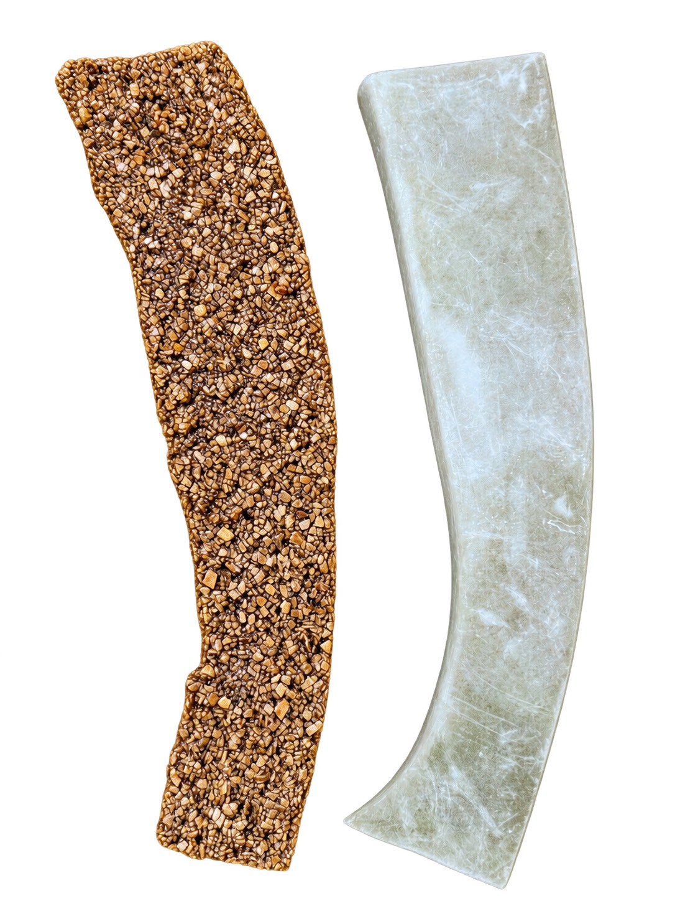
05 / Direction
From tile
to object.
The refined tile brings lighter shell fragments into a dark composite. Changes in particle size, color, and distribution give the surface its character, while moving away from the immediate appearance of whole pistachio shells.
The tray application study carries this darker direction into an object, exploring how the material reads across a broad surface, a detailed rim, and a curved profile.